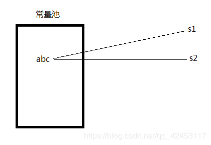
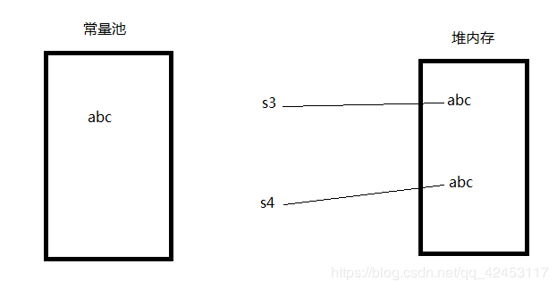
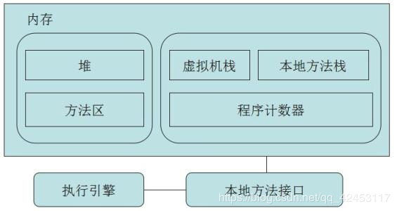
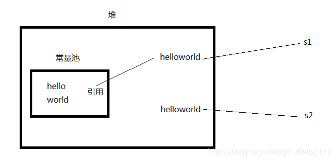

字符串在Java生产开发中的使用频率是非常高的，可见，字符串对于我们而言非常关键。那么从C语言过来的同学会发现，在C中是没有String类型的，那么C语言要想实现字符串就必须使用char数组，通过一个个的字符来组拼成字符串。
那其实在Java中，关于字符串的实现，其实用的也是char数组，这可以从源码中得到体现。
/**
* Initializes a newly created {@code String} object so that it represents
* the same sequence of characters as the argument; in other words, the
* newly created string is a copy of the argument string. Unless an
* explicit copy of {@code original} is needed, use of this constructor is
* unnecessary since Strings are immutable.
*
* @param original
* A {@code String}
*/
public String(String original) {
this.value = original.value;
this.hash = original.hash;
}这是String类的构造方法，而这个value实际上就是char数组。
/** The value is used for character storage. */
private final char value[];我们都知道如何去创建一个字符串，那么， 字符串在内存中的保存方式是怎样的呢？
在内存中有一个区域叫做常量池，而当我们以这样的方式去创建字符串：
String s1 = "abc";
String s2 = "abc";这个字符串就一定会被保存到常量池中。而Java虚拟机如果发现常量池中已经存在需要创建的字符串中，它就不会重复创建，而是指向那个字符串即可。

String s1 = "abc";
String s2 = "abc";
System.out.println(s1 == s2);所以上述代码段的执行结果一定是true。
但是如果使用new关键字区创建字符串，过程就不太一样了。比如下面的声明：
String s3 = new String("abc");
String s4 = new String("abc");过程是这样的：首先将abc保存在常量池中，此时并没有引用，然后new关键字会去创建一个字符串对象，就会在堆内存中创建abc，然后s3变量指向abc。当执行第二句声明时，因为常量池中已经存在abc，所以不会重复创建，而new关键字又会去堆内存开辟空间存放abc，然后s4变量指向abc。

String s3 = new String("abc");
String s4 = new String("abc");
System.out.println(s3 == s4);所以上述代码段的执行结果一定是false。
当相同的字符串常量被多次创建时，注意是使用双引号(" ")显式声明时，字符串常量对象会被保存在常量池中，且只会创建一个对象，这就是字符串驻留，这个名词的产生就是为了提升性能。简单提一下，字符串中有一个方法叫做intern()；那么这个方法有什么作用呢？ 该方法会去常量池中寻找当前调用该方法的字符串常量，若找到，则直接返回该字符串对象，若没有，则将当前字符串放入常量池并返回，总之该方法一定会返回字符串。
String s3 = new String("abc");
String s4 = new String("abc");
System.out.println(s3.intern() == s4.intern());所以上述代码段的执行结果一定是true，因为字符串驻留只允许常量池中一个相同字符串的存在。
刚才一直在说常量池，那么常量池具体在哪呢？这就要来研究一下JVM的内存结构。
JVM分为堆、栈、方法区，栈又分为本地方法栈和Java栈。

在Java7之前常量池就放在方法区里，而从Java7开始，常量池被移到了堆。这样说过于抽象，我们可以通过代码来感受这一过程。
String s1 = new String("hello") + new String("world");
String s2 = "helloworld";
System.out.println(s1 == s2);上述程序段的执行结果一定是false。因为s1变量在堆中，而s2变量在常量池中，两者肯定不相同。
那么看下面这段代码，猜猜看结果是什么？
String s1 = new String("hello") + new String("world");
System.out.println(s1.intern() == s1);按照刚才的分析，intern()返回的一定是常量池里的字符串，而s1变量在堆中，它们肯定是不一样的，但运行结果竟然是true。那是不是就能解释常量池在堆中，所以它们指向的是同一个对象呢？其实还不完全是，我们可以继续看一段代码。
String s1 = new String("hello") + new String("world");
System.out.println(s1.intern() == s1);
String s2 = new String("hello") + new String("world");
System.out.println(s2.intern() == s2);这段代码的运行结果：
true
false感觉很神奇，让人猜不透，摸不着。别急，下面我们来一起分析一下。

通过这个图来理解一下，首先第一行代码会在常量池中创建hello和world两个字符串，接着在堆中开辟了一个空间存放组合后的字符串helloworld，然后变量s1指向它。我们说intern()会返回常量池中的字符串，那么在常量池中没有helloworld的情况下intern()方法会怎样处理呢？其实它会将对堆中helloworld的引用放入常量池中，此时s1.intern()和s1都指向的是同一个对象，它们是相等的。但是s2在创建的过程中也会在堆中开辟一个空间存放helloworld，使变量s2指向它，而s2.intern()方法在执行的时候发现，helloworld的引用已经存在，所以直接返回，但此时返回的其实是s1变量的引用，那么s2.intern()与s2不相等相信大家能够理解了。
String s1 = new String("hello") + new String("world");
System.out.println(s1.intern() == s1);
String s2 = new String("hello") + new String("world");
System.out.println(s2.intern() == s1);那么这段程序的输出结果你若是能立马知晓，那么恭喜你，前面的知识点你已基本掌握。执行结果就是：
true
true我们还可以通过一个极端的方法来判断常量池的位置。
List list = new ArrayList();
String str = "boom";
for(int i = 0;i < Integer.MAX_VALUE;i++) {
String temp = str + i;
str = temp;
list.add(temp.intern());
}通过编写这一段程序能够让JVM去不停地将字符串变量存入常量池从而使其内存溢出，内存溢出后控制台信息如下：
Exception in thread "main" java.lang.OutOfMemoryError: Java heap space
at java.util.Arrays.copyOfRange(Arrays.java:2694)
at java.lang.String.<init>(String.java:203)
at java.lang.StringBuilder.toString(StringBuilder.java:405)
at com.itcast.test2.StringTest.main(StringTest.java:25)可以看到，控制台信息提示堆内存溢出，这也可以得出常量池的位置是在堆内。
这是Java7及其以后版本的输出信息，当我们将版本切换为Java7之前的版本，同样的代码，输出信息如下：
Exception in thread "main" java.lang.OutOfMemoryError: PermGen space
at java.util.Arrays.copyOfRange(Arrays.java:2694)
at java.lang.String.<init>(String.java:203)
at java.lang.StringBuilder.toString(StringBuilder.java:405)
at com.itcast.test2.StringTest.main(StringTest.java:25)PermGen space其实就是方法区， 那么其实在JVM中的堆，一般分为三大部分：新生代、老年代、永久代：这个PermGen space就是永久代，也就是方法区，叫法不同而已。
继续来探讨一下关于字符串常量的一些其它问题。
String s1 = "hello" + "world";
String s2 = "helloworld";
System.out.println(s1 == s2);
String temp = "hello";
String s3 = temp + "world";
String s4 = "helloworld";
System.out.println(s3 == s4);那么，这两个输出的结果是什么呢？
结果是：
true
false第一个输出为true不难理解，因为s1和s2指向的都是常量池中的helloworld字符串，那么s3和s4难道就不是吗？它还真就不是这样了。s3在创建过程中会将temp保存在堆内存中，所以s3和s4指向的对象不是同一个。
我们可以通过反编译来证实，将这段代码的.class文件进行反编译，结果如下：
String s1 = "helloworld";
String s2 = "helloworld";
System.out.println(s1 == s2);
String temp = "hello";
String s3 = String.valueOf(temp) + "world";
String s4 = "helloworld";
System.out.println(s3 == s4);我们可以看到，s1和s2的创建过程其实是一模一样的，其实，JVM为了优化速度，当它确定是两个字符串常量进行拼接时，它会在编译器就完成拼接，而并不会去创建对象处理，但是s3的创建要经过temp变量，因为JVM无法在编译期就推测出temp，所以它要通过String对象来进行处理，将temp放入堆内存。
所以，并不是说只有出现new关键字变量才会放入堆内存中。
希望这篇文章能够使你更加深入地理解字符串常量。